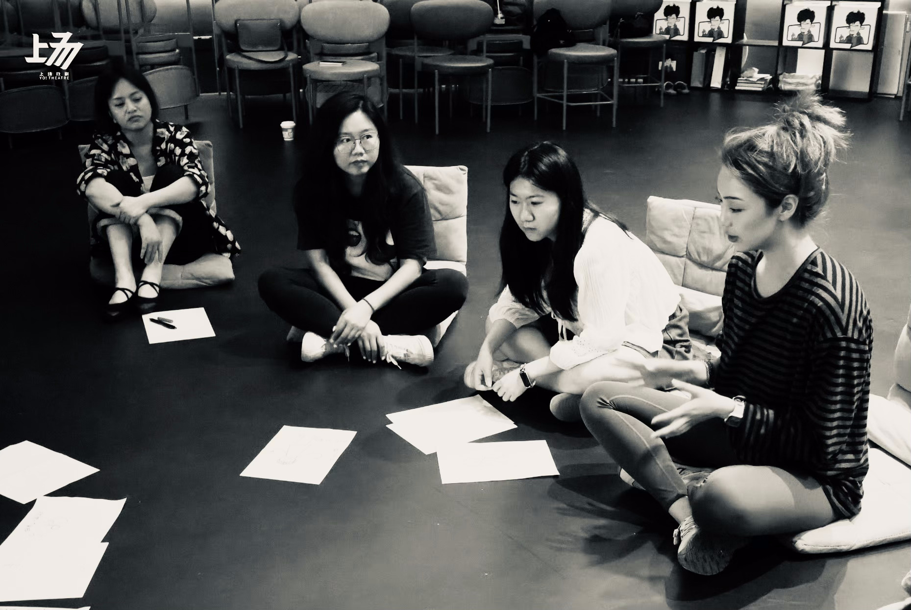

04 / FACILITATION
Creating conditions for collective exploration.
Dance improvisation, applied theatre, and devising workshops for adults and young people.
"No bodies that can't dance — only bodies that don't dare to move." Xiwei draws from theatre directing, performance training and improvisation to create spaces where participants can connect with their inner voices. Workshops centre on grounding, spontaneity, presence and inner flow.


SELECT WORKSHOPS
Designer & Facilitator · Adults (18+)
On Different Frequencies: Why Can't Men and Women Understand Each Other?
Designer & Facilitator · Adults (18+)
Framing Love: "Love" & "Awakening" Themed Workshop
Designer & Facilitator · Adults (18+)
When AI Replaces Humans
Designer & Facilitator · Ages 12+
Body Awareness and Appetite Exploration: You Are the Entire Universe
Designer & Facilitator · Adults (18+)
Time Poverty
Designer & Facilitator · Adults (18+)
Me and Intimate Relationships
Designer & Facilitator · Adults (18+)
Body Awareness and Appetite Exploration
SELECT CLIENTS
Hunzhi Theatre (Shanghai Tower) · Shanghai Daning Theatre · Shanghai Jing'an Modern Drama Valley · 531 Theatre (Nanjing) · Xie Xin Dance Theatre · Baby Drama · Catching Drama Education · Wuzhen Theatre Festival
SPEAKING & CHOREOGRAPHY
Assistant choreographer, The Greatest Showman director Michael Gracey and West End choreographers Ashley Wallen / Jenny Griffin — Apple brand Chinese New Year film (2025). Lead choreographer, McDonald's TVC 2026 (feat. Wang Leehom / Wang Sulong).